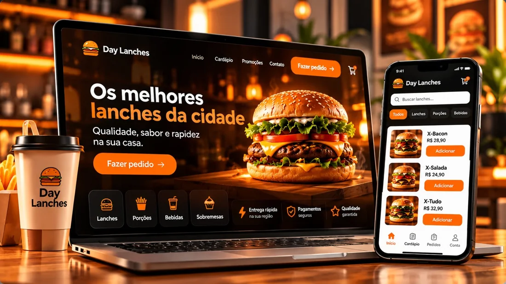

Sites
Uma presença que explica o seu negócio.
Apresentação clara, navegação simples e um próximo passo que faz sentido.
01 DO PROBLEMA À SOLUÇÃO DIGITAL
Eu transformo em
solução digital.
Sites, sistemas, automações e IA para resolver
o que realmente trava o seu negócio.
O problema vem primeiro. A tecnologia vem depois.
02 O PROBLEMA
Informações dispersas. Processos interrompidos.
Uma rotina que pede um caminho mais claro.
Antes de construir, é preciso observar.
03 DIAGNÓSTICO
Eu olho para a rotina, conecto as informações
e defino o que precisa mudar.
04 TRANSFORMAÇÃO
Separar. Encontrar padrões. Conectar.
A forma muda quando o raciocínio encontra direção.
Encontrar o que precisa ser resolvido.
05 SOLUÇÕES DIGITAIS
Não começa com uma lista de tecnologias.
Começa com o que precisa funcionar melhor.
Uma presença que explica o seu negócio.
Apresentação clara, navegação simples e um próximo passo que faz sentido.
A operação dentro de um fluxo.
Clientes, pedidos e informações organizados para a rotina de quem usa.
Menos etapas repetidas.
Conectar tarefas para que o trabalho siga sem depender de ações manuais a cada passo.
Informação que ajuda a agir.
Uma camada de apoio para atendimento, análise e processos, com o contexto certo.
Ferramentas que conversam.
Conectar sistemas e APIs para que a informação chegue aonde precisa.
O caminho que o seu negócio precisa.
Escopo e ferramentas escolhidos depois de entender o problema.
Deslize para explorar as soluções →
06 PROJETOS SELECIONADOS
Problemas diferentes. Soluções com contexto.
Conheça o que foi construído em cada experiência.

CARDÁPIO & OPERAÇÃO
Entre escolher o lanche e concluir o pedido, cada etapa precisa fazer sentido.
Cardápio, carrinho, endereço e pagamento conectados ao fluxo do pedido.
Explore a experiência real e veja como o pedido acontece.
Explorar a experiência

COBRANÇAS & ACOMPANHAMENTO
Cliente, cobrança e situação do pagamento precisam estar conectados.
Gestão de clientes, cobranças, estados de pagamento e geração de recibos.
Uma interface para consultar a operação. A demonstração preserva os dados dos clientes.
CATÁLOGO & APRESENTAÇÃO
Apresentar uma coleção exige cuidado com a informação e com a escolha.
Catálogo, busca, seleção de produtos e carrinho construídos para a marca.
Uma apresentação que ajuda o visitante a conhecer a coleção e escolher o próximo passo.
Explorar a experiência
EXPERIÊNCIA DE COMPRA
Uma experiência de compra precisa continuar depois da vitrine.
Catálogo, carrinho, checkout, pagamento e consulta de pedidos no mesmo percurso.
Conheça a loja e explore o caminho da compra. O acesso atual solicita cadastro.
Explorar a experiência
Deslize para conhecer cada história.
Problema, solução e experiência.
07 COMO FUNCIONA
Você traz o contexto.
Eu traduzo em uma solução que faça sentido.
O que trava a rotina?
Entendo o cenário e as conexões.
Alinhamos o caminho e o escopo.
Você acompanha a construção.
Validamos e definimos os próximos passos.
08 INTELIGÊNCIA COM PROPÓSITO
É uma ferramenta para resolver
o problema certo.
Uma camada que conecta informação,
atendimento e operação. Com intenção.
09 POR TRÁS DA SOLUÇÃO
Uma conversa sobre o seu negócio.
Um raciocínio antes da primeira linha de código.

10 O RESULTADO DO CAMINHO
O que estava disperso encontra direção.
As partes passam a trabalhar juntas.
11 VAMOS ENTENDER O SEU DESAFIO
Me conte o problema.
Vamos encontrar o próximo passo.
Site institucional + cardápio online
Site institucional
Sistema de gestão financeira
Automação WhatsApp
Agendamento automotivo
Sistema de apontamentos
Controle de cobranças
ANTES DA PRIMEIRA CONVERSA
Não. Começamos pelo que precisa ser resolvido. A escolha técnica vem depois do diagnóstico e do escopo.
Sim. Um site ou sistema existente pode ser avaliado antes de decidir o que preservar, integrar ou reconstruir.
O escopo, as integrações e a complexidade definem o valor e o prazo. Depois da conversa inicial, preparo uma proposta com as etapas do trabalho.
A experiência considera quem vai usar e em quais aparelhos. As telas são planejadas para celulares, tablets e computadores, conforme o projeto.